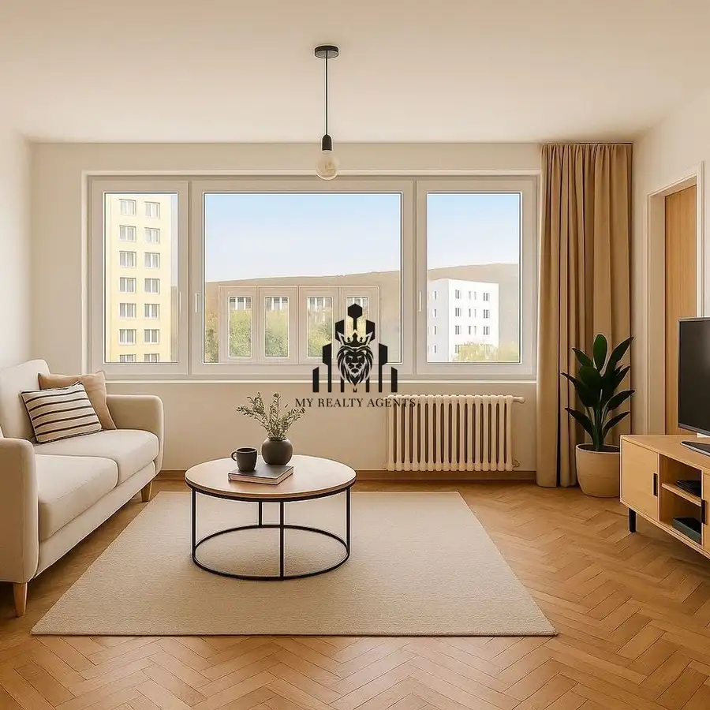
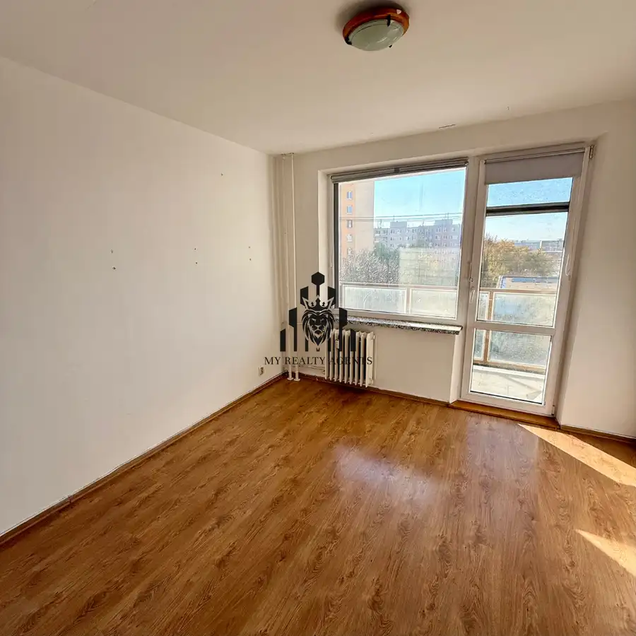
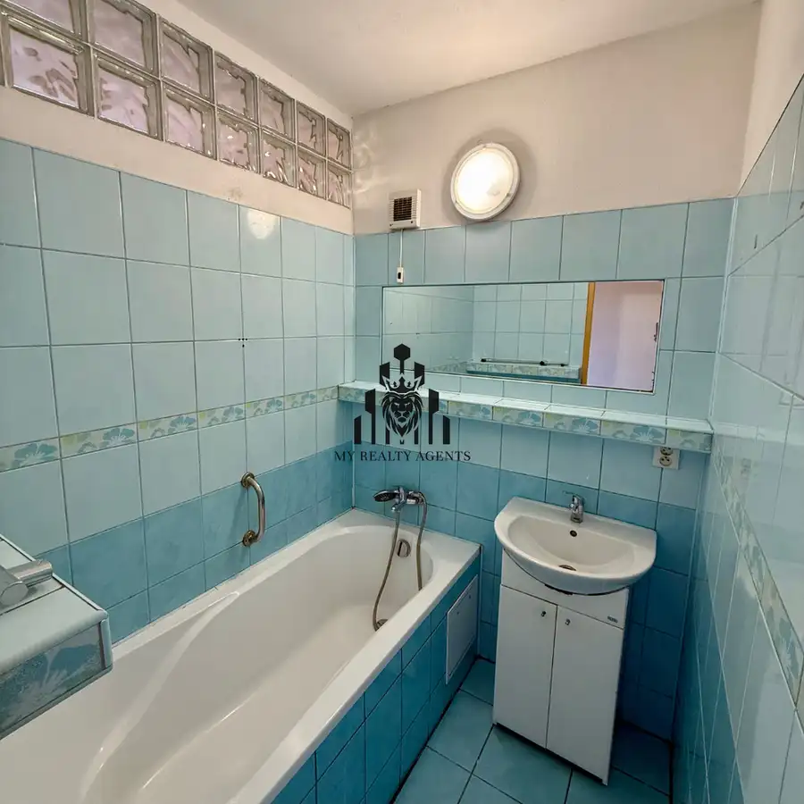
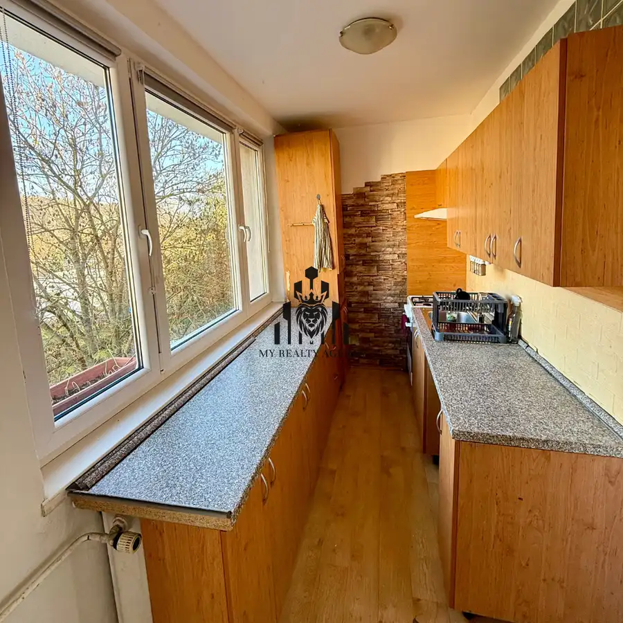
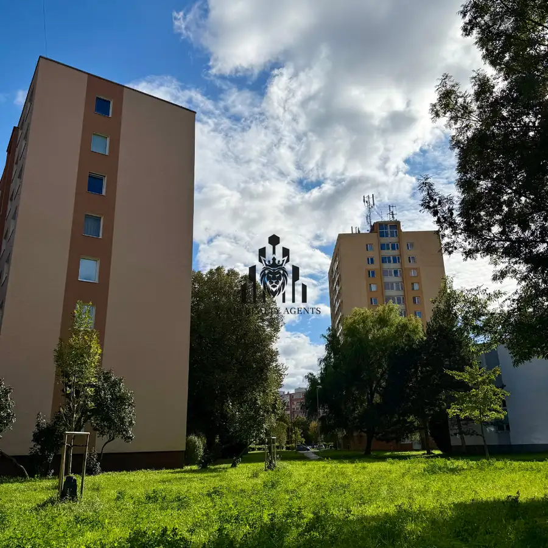

Na predaj 3-izbový byt s loggiou na Polárnej ulici – Sídlisko Nad jazerom
Nad jazerom, Košice






- Dispozícia3-izbový
- Plocha65 m²
- Poschodie5. z 8
- StavČiastočná rekonštrukcia
- VlastníctvoOsobné
O nehnuteľnosti
MY REALTY AGENTS exkluzívne ponúka na predaj 3-izbový byt s loggiou na Polárnej ulici – Sídlisko Nad jazerom, KošiceAk hľadáte bývanie v obľúbenej a tichej lokalite plnej zelene, s kompletnou občianskou vybavenosťou a výbornou dostupnosťou do centra, tento byt je pre vás ideálny. Nachádza sa v bytovom dome na Polárnej ulici, v srdci sídliska Nad jazerom – jednej z najžiadanejších častí Košíc.Dispozícia a výmera•podlahová plocha: 65 m²•3 izby s možnosťou dispozičnej úpravy na 4-izbový byt•obývacia izba s výstupom na balkón•samostatná kuchyňa•kúpeľňa a samostatné WC•k bytu prislúcha pivnicaStav nehnuteľnosti•byt prešiel čiastočnou rekonštrukciou•murované jadro•plastové okná vo všetkých miestnostiach•ostatné časti bytu v pôvodnom, zachovalom stave – vhodné na modernizáciu podľa vlastných predstáv•bytový dom je zateplenýLokalita – Sídlisko Nad jazeromTáto lokalita ponúka všetko, čo moderná rodina potrebuje:•kompletná občianska vybavenosť v pešej dostupnosti•základná a stredná škola, škôlky, nákupné centrum, posilňovňa•jazero, parky, cyklotrasy, detské ihriská a množstvo zelene•výborná dostupnosť do centra mesta aj na diaľničný obchvatCena: 191 500 €(vrátane provízie a kompletného právneho servisu MY REALTY AGENTS)Kontakt na makléra:• Martin Tkáč – +421 908 158 068 | tkac@myrealtyagents.sk
Parametre
- Cena vrátane energií
- Nie
- Druh
- 3 izbový byt
- Dátum zverejnenia
- 12. 11. 2025
- Energetický certifikát budovy
- V príprave
- Podlažie
- 5
- Počet izieb / miestností
- 3
- Počet nadzemných podlaží
- 8
- Počet spální
- 1
- Rok výstavby
- 1980
- Stav nehnuteľnosti
- Čiastočná rekonštrukcia
- Telekomunikácie
- Optická sieť
- Typ
- Predaj
- Typ konštrukcie
- Panelová
- Umiestnenie
- Ďalšie nadzemné podlažie
- Vlastníctvo
- Osobné
- Vybavenie
- Výťah
- Vybavenie objektu
- Holopriestor
- Vykurovanie
- Ústredné
- Zariadenie
- Nezariadené
- Úžitková plocha
- 65 m²